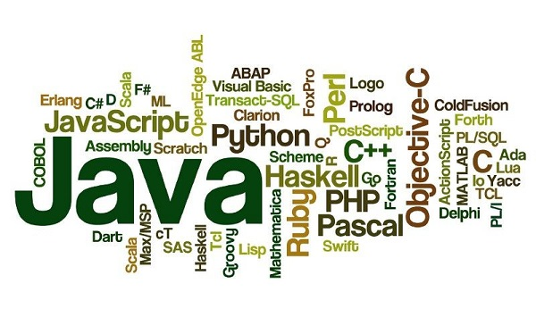

Programming is the hidden power of the future, isn't it?
The most vital ability to find out in today’s world is to grasp the way to write a malicious program. Today, computers have entered in nearly each business. Be it the autopilot in associate craft or digital meter in your bike, computers in varied forms surround U.S.. Computers area unit extraordinarily helpful for a company to rescale well. Gone area unit the times of pen and paper. Today, so as to store and access your data, you completely would like computers.
The programming and developer communities area unit rising at a rate quicker than ever before. varied new programming languages area unit developing that area unit suited to totally different classes of developers (beginners, intermediate, and experts) in addition as for various use cases (web application, mobile applications, game development, distributed system, etc).
so what is programming language ?
A programming language defines a set of instructions that are compiled together to perform a specific task by the CPU (Central Processing Unit). The programming language mainly refers to high-level languages such as C, C++, Pascal, Ada, COBOL, etc.
what is the importance of programming ?
Without programmers writing programs telling computers and alternative technological devices what to try to to, they might virtually be doing nothing and none folks would be able to get pleasure from any of the luxuries technology must provide. Programs square measure found in everything from video games to phone apps, which pool of merchandise is growing. we tend to square measure moving toward a additional technologically advanced world which implies that with every coming back year the requirement for programmers can still grow into 2020 and on the far side. pc programs square measure primarily a series of written languages that computers perceive, that is often a hybrid language between regular English and arithmetic. With a reasonably high beginning wage and in an exceedingly field that's increasing at an exponential rate, learning the way to program and dealing as a coder appears to be a talent which will last for a really, terribly while. (ref by :heytutor )
Here is some of most popular languages:
- python
- java
- c/c++
- java script
- swift